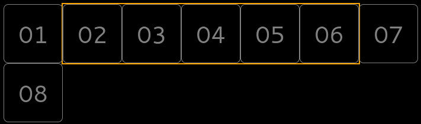

Một "thanh trượt" đơn giản với thuộc tính margin trong css cộng với một chút transition cho mượt mà. Đơn nhiên là không thể vắng mặt Javascript.
Tại sao lại là slide-bar?
Ngày trước, lúc mới học làm web ấy. Bần tăng cũng lao vào làm đồ án khi mà gần cuối kỳ như bao người. Mà giao diện là code tay hết nhé, có tìm hiểm rồi thấy cái slide của Bootstrap nó hay hay nên cũng ham hố làm thử. Sau đó, muốn phát triển lên, hiển thị nhiều item cùng lúc, thế là lại lao vào vọc vẹo dưới áp lực từ dealine. Phê lắm các bác ạ, xử lý từng item luôn ấy. Mãi cũng xong, nhưng cái phương pháp hồi đó làm củ chuối lắm. Làm cho xong để nộp nên không chăm chút lắm. Tới kỳ nghỉ hè năm đó, có thời gian nhiều hơn rồi mới ngồi code lại phần đó cho nó "chất" hơn tý. Và nghĩ ra cái cách này (xíu chỉ cho :D)
Tại sao lại là margin?
Trong lúc tìm giải pháp mới cho cái slide nhiều item đó, bần tăng cũng vọc vẹo các thuộc tính của css luôn thể, đại loại như gán giá trị âm cho margin, padding, top, left, ... và ý tưởng nảy xinh khi đang nghịch margin. Chuyện là thế đấy.
Nói qua margin một xíu. Nó là một thuộc tính của CSS (Cascading Style Sheet) dùng để định vị khoảng cách từ lề của phần tử được gán tới các phần tử xung quanh nó (không tính những phần tử neo đậu lung tung (phần tử có thuộc tính "position" là "float" ấy ợ))
Mới đầu học về CSS, bần tăng cũng chỉ hiểu nôm na thế thôi. Đại loại là muốn nó cách xa thằng bên trên nó ra thì dùng margin-top, muốn nó "xa lánh" thằng bên trái nó thì dùng margin-left là xong. Một hôm nổi hứng bung code Bootstrap 3 ra xem, hơi ngạc nhiên khi phát hiện các lớp "col-*" có margin mang giá trị âm. Thế là lao vào vọc, một cảm giác thú vị như vừa phát hiện ra trái đất hình cầu ấy ợ.
Margin khiến phần tử được gán "xa lánh" những phần tử xung quanh khi ta để giá trị dương vào. Ngược lại, khi thay bằng giá trị âm, margin khiến phần tử được gán "xâm lược lãnh thổ" của những thẻ quanh nó.
Một điểm nữa khiến bần tăng dùng margin đó là khi một item trong hàng (slide-bar) có margin thay đổi cùng phương với phương mà các item được dồn thì cả "hạm đội" item phía sau đều nhúc nhích theo. Dựa vào đặc điểm này ta có thể "lay chuyển" cả hàng item chỉ với việc điều khiển margin của item đầu hàng (item cuối cùng theo hướng dồn). Cụ thể hơn, với hàng item nằm ngang và các item đều dồn về bên trái (được gán thuộc tính "float" bằng "left") thì đầu hàng là item đầu tiên tính từ trái sang phải.
Từ khúc này sẽ có code + giải thích các kiểu cho các bác ợ
Bắt đầu với cái khung html trước đã nhé.
<div id="holder">
<div id="tray" class="">
<div class="item">01</div>
<div class="item">02</div>
<div class="item">03</div>
<div class="item">04</div>
<div class="item">05</div>
<div class="item">06</div>
<div class="item">07</div>
<div class="item">08</div>
</div>
</div>
Ngoài cùng là một thẻ div dùng để làm khung chứa, đồng thời cũng là màn che cho cái mớ lộn xôn diễn ra bên trong. Bên trong cái khung chứa là một khung chứa khác (gọi tạm là cái khay). Cái khay này có tác dụng giúp item cuối hàng không bị tụt xuống hàng thứ hai khi tràn. Trong cái khay bần tăng để 8 item để thử nghiệm. Các bác muốn để bao nhiêu tùy thích. Mỗi item có để thêm cái số cho dễ theo dõi
Bắt đầu với cái khung chứa trước
#holder {
padding: 0;
margin: 200px auto;
width: 500px;
height: 100px;
border: 2px solid orange;
overflow: hidden;
}
Thuộc tính margin được dùng với hai đối số, "200px" là dùng cho top và bottom còn "auto" là dùng cho hai bên. Khi dùng margin auto cho cả 4 phía hoặc hai bên với một phần có độ rộng "width" xác đinh và mang thuộc tính hiển thị khối ("display: block" ấy ợ) thì phần tử này sẽ được tự động căn giữa the chiều ngang
Thêm đường viền để các bác dễ theo dõi. Thuộc tính overflow bần tăng đặt là hidden là để che đi những thứ vượt khỏi phạm vi khung chứa.
Về chiều dài khung chứa, bần tăng sẽ thử nghiệm hiển thị 5 item cùng lúc, mỗi item có kích thước 100x100 nên khung chứa sẽ có độ dài 500px
Tiếp theo là phần định dạng cái khay:
#tray {
padding: 0;
margin: 0;
width: 700px;
height: 100px;
margin-left: -100px;
}
Bần tăng đã tắt hết padding và margin cho khay để nó không chiếm diện tích. Chỉ trừ margin-left là -100px để khay cắm vào lề trái của khay chứa 100px (bằng với bề rộng của 1 item nhé).
Khay có bề rộng bằng 7 item với 5 item sẽ được hiển thị ở giữa và 2 item "dự bị" ở hai bên phục vụ cho hiệu ứng trượt. Chiều cao bằng với chiều cao của item.
Tiếp đến là định dạng cho từng item:
.item {
display: inline-block;
width: 98px;
height: 98px;
border: 1px solid grey;
float: left;
margin: 0;
font-size: 40px;
font-style: bold;
border-radius: 8px;
color: grey;
text-align: center;
line-height: 98px;
}
Định dạng cho các item xếp thành 1 hàng ngang với loại hiển thị "display: inline-block" và thiết lập hướng dồn cho hàng về bên trái với "float: left". Tắt hết margin đi đã, tinh chỉ thêm chút cho chữ nằm ngay giữa và tăng kích thước chữ cho dễ nhìn. Chiều cao và chiều rộng bần tăng chỉ để 98px là vì còn 2px nữa dùng cho border rồi.
Sau khi định dạng như trên, chúng ta sẽ được một thứ như này:
Hình ở trên là bần tăng đã bỏ thuộc tính overflow đi để những thứ ngoài khung chứa hiển thị luôn để các bác dễ hình dung. Cái khung màu cam là khung chứa nhé.
Để item có thể nhúc nhích thì nó cần có ít nhất hai trạng thái. Trước tiên, nói về ý tưởng, mình muốn item đầu tiên sẽ từ lề trái của khung chứa tuột dần vào trong và mất hẳn. Tất nhiên là các item phía sau cũng phải chuyển động theo. Như đã nói ở trên, việc của mình là điều khiển item đầu hàng theo phương trùng với phương dồn item, các item còn lại sẽ bị ảnh hưởng.
Thiết lập trạng thái trước chuyển động như này:
.ready .item:first-child {
margin-left: 100px;
transition: 0s linear;
-webkit-transition: 0s linear;
}
Và thiết lập sau chuyển động sẽ như này:
.item:first-child {
margin-left: 0;
transition: .5s ease;
-webkit-transition: .5s ease;
}
Về cách hoạt động, trước chuyển động thì khay sẽ mang lớp "ready" để dữ cho item đầu tiên không bị tuột vào trong lề khung chứa. Muốn kích hoạt chuyển động thì dùng Javascript loại bỏ lớp ready khỏi khay, lúc này margin-left sẽ trả từ 100px về 0px và tạo ra hiệu ứng chuyển động cho item đầu tiên cũng là item đầu hàng. Đồng thời do hàng dồn về bên trái nên khi item đầu tiên bị tuột về bên trái thì các item còn lại tự động dồn về theo. Kết quả là cả hàng dịch sang trái một khoảng bằng nhau và bằng với đoạn margin-left đã mất đi. Để item đầu tiên tuột hẳn vào trong và item ngay sau vào đúng vị trí thì margin-left phải bằng với chiều rộng của item.
Với các cài đặt như trên thì cái hàng item chỉ chạy được một lần rồi ngủm luôn. Ý tưởng là làm sao cho nó chạy hoài?
Lý thuyết trước, sau khi chuyển động đầu tiên kết thúc ta "bóc" item đầu tiên khỏi hàng rồi "nhét" trở lại vào cuối hàng. Đồng thời thêm lớp "ready" cho khay để chuẩn bị cho lần chuyển động kế tiếp. Khi mọi thứ đã sẵn sàng ta kích hoạt chuyển động bằng cách loại bỏ lớp "ready" khỏi khay là xong. Thực hiện lại loạt hành động trên bằng một vòng lặp vô hạn thế là cái hàng item sẽ chạy hoài.
Triển khai ý tưởng với chút Javascript như sau:
var pull = function() {
document.getElementById("tray").className = "";
setTimeout(function(){
var holder = document.getElementById("tray");
var first = document.querySelectorAll("#tray .item")[0];
holder.removeChild(first);
holder.appendChild(first);
holder.className = "ready";
setTimeout(pull, 200)
}, 500);
};
Cuối cùng là gọi hàm trên khi cửa sổ được tải như sau:
window.onload = pull;
Thế là xong. Các bác có thể xem trực tiếp kết quả tại đây Bần tăng có làm thêm cái nút để bật/tắt thuộc tính overflow cho các bác luôn. Tắt thuộc tính overflow đi để thấy được bên trong nó hoạt động như nào nhé.